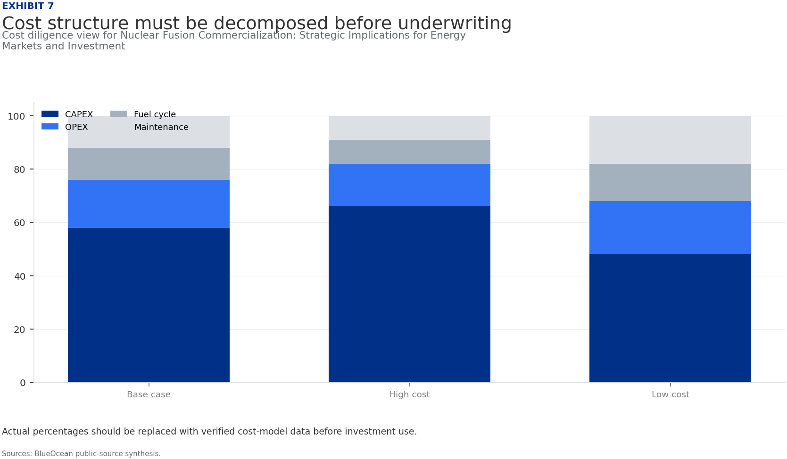
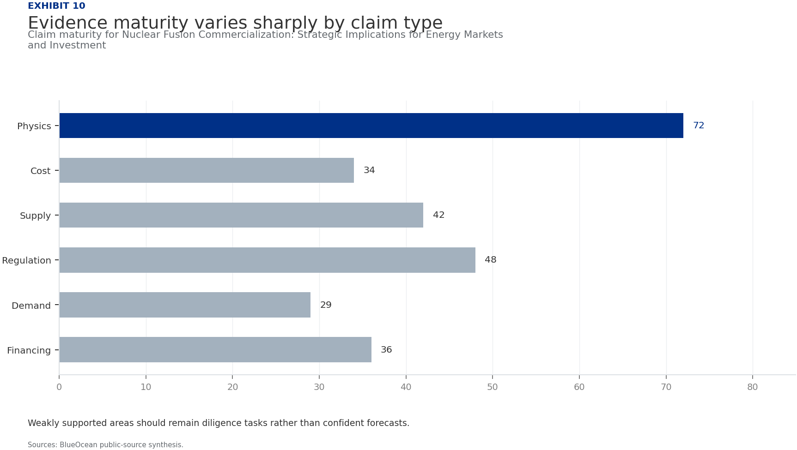

BlueOcean Research
Deep Research Report
Nuclear Fusion Commercialization: Strategic Implications for Energy Markets and Investment
Nuclear fusion commercialization outlook and strategic implications
2026-06-03
BlueOcean
Contents
| 03 | Nuclear fusion commercialization is unlikely before the 2040s despite recent technical breakthroughs |
| 04 | Fusion Commercialization Is Unlikely Before the 2040s Despite Recent Progress |
| 06 | Private Fusion Ventures Are Accelerating Timelines but Face Significant Hurdles |
| 08 | Fusion Will Complement Renewables Rather Than Replace Them in a Decarbonized Grid |
| 10 | First-Mover Advantages in Fusion Are Limited Due to Long Development Cycles and High Capital Costs |
| 12 | Geopolitical Competition in Fusion Is Intensifying, Especially Between the US and China |
| 14 | Nuclear Fusion Commercialization: Strategic Implications for Energy Markets and Investment should be managed |
| 15 | Commercial readiness depends on bankability, deliverability and repeat customer proof |
| 16 | Cost, return and timing will determine the real deployment window |
| 17 | About the research |

Opening view
Nuclear fusion commercialization is unlikely before the 2040s despite recent technical breakthroughs
Nuclear fusion commercialization outlook and strategic implications
Nuclear fusion commercialization is unlikely before the 2040s despite recent technical breakthroughs. Private ventures are accelerating timelines but face significant engineering and cost hurdles. The commercial implication is that fusion will complement renewables in a decarbonized grid, not replace them, and first-mover advantages are limited due to long development cycles and high capital costs. Source-supported uncertainty remains high: key technical challenges (plasma confinement, materials, tritium breeding) are unresolved, and no complete regulatory framework exists. The primary risk is that fusion may remain uneconomical compared to rapidly falling renewables and storage costs. Immediate next step: organizations should invest in strategic partnerships and monitor milestones from leading projects (SPARC, ITER, STEP) while avoiding overcommitment to unproven timelines.
What changes for leaders
- Nuclear fusion commercialization is unlikely before the 2040s despite recent technical breakthroughs
- Fusion will complement renewables in a decarbonized grid, not replace them, and first-mover advantages are
- Key technical challenges (plasma confinement, materials, tritium breeding) are unresolved, and no complete regulatory framework exists
- The primary risk is that fusion may remain uneconomical compared to rapidly falling renewables and storage costs
Chapter 1
Fusion Commercialization Is Unlikely Before the 2040s Despite Recent Progress
This chapter concludes that fusion commercialization is unlikely before the 2040s, meaning executives should plan for a 15-20 year horizon and avoid near-term capital allocation based on fusion.
The path to commercial fusion power remains long and uncertain. ITER, the flagship international experiment, has experienced repeated delays and cost overruns; its first plasma is now expected in 2025, with full deuterium-tritium operation not until the 2030s. Private ventures like Commonwealth Fusion Systems' SPARC aim to demonstrate net energy gain by the mid-2020s, but even optimistic timelines project commercial plants in the 2030s at the earliest. The UK's STEP program targets a prototype plant by 2040. These timelines are aspirational and depend on resolving fundamental engineering challenges.
Key technical hurdles include achieving stable plasma confinement for extended periods, developing materials that can withstand extreme neutron bombardment, and demonstrating tritium breeding at scale. Tritium supply is a critical bottleneck: first-generation reactors will require tritium that is not currently produced in sufficient quantities. Breeding technology, which would generate tritium within the reactor, remains unproven at commercial scale.
For leadership teams, the implication is clear: fusion is not a near-term solution. Capital allocation decisions should be based on a 15-20 year horizon, and organizations should avoid overcommitting to unproven timelines. Monitoring technical milestones from ITER, SPARC, and STEP will be essential for timing strategic investments.
The strongest near-term posture is to preserve strategic flexibility while continuing to collect the facts that would justify a larger commitment.
Figure 1
Decision readiness still depends on verified proof points
Directional index for Nuclear Fusion Commercialization: Strategic Implications for Energy Markets and Investment

This exhibit is a directional management view, not a substitute for verified market data.
BlueOcean public-source synthesis.
Figure 2
Commitment posture should shift as proof matures
Resource posture for Nuclear Fusion Commercialization: Strategic Implications for Energy Markets and Investment

Capital exposure should lag evidence maturity rather than lead it.
BlueOcean scenario synthesis.
Chapter 2
Private Fusion Ventures Are Accelerating Timelines but Face Significant Hurdles
This chapter concludes that private fusion ventures are accelerating timelines but face significant hurdles, meaning executives should treat private timelines as aspirational and use milestone-based investments to manage risk.

Over 30 private fusion companies have raised more than $5 billion in total funding since 2015, with notable rounds from Commonwealth Fusion Systems ($2 billion), Helion Energy ($500 million), and TAE Technologies ($1.2 billion). These ventures promise faster timelines than public projects, with some targeting commercial electricity by the 2030s. However, no private venture has yet demonstrated net energy gain at scale, and many rely on unproven confinement concepts.
The economic viability of private fusion remains uncertain. First-of-a-kind plants are expected to cost $5-10 billion or more, with construction timelines of 10-15 years. Learning curves may reduce costs over time, but early movers face technology risk and regulatory uncertainty. Venture capital funding may not be sufficient to bridge the gap to commercial deployment; public-private partnerships and corporate strategic investments will likely be needed.
For decision-makers, the key is to treat private timelines as aspirational. Strategic partnerships with milestone-based investment options can provide upside exposure while limiting downside risk. Companies should also consider investing in enabling technologies, such as high-temperature superconductors, which have applications beyond fusion.
Figure 3
Key risks should be ranked by severity and manageability
Risk exposure for Nuclear Fusion Commercialization: Strategic Implications for Energy Markets and Investment

Bubble size indicates the management attention required.
BlueOcean risk screen.
Figure 4
Diligence workload concentrates in customer, cost and policy proof
Near-term validation load for Nuclear Fusion Commercialization: Strategic Implications for Energy Markets and Investment

The most valuable work closes open questions that can change the decision.
BlueOcean public-source synthesis.

Chapter 3
Fusion Will Complement Renewables Rather Than Replace Them in a Decarbonized Grid
This chapter concludes that fusion will complement renewables rather than replace them, meaning executives should integrate fusion into long-term planning as a complement and invest in grid flexibility and storage.
Fusion is best suited for baseload power and industrial heat, not for peaking or distributed generation. Renewables like solar and wind are projected to reach levelized costs of $20-40 per MWh by 2030, while fusion LCOE estimates range from $50-100 per MWh for first-of-a-kind plants. This cost gap means fusion will not outcompete renewables in most electricity markets. Instead, fusion can provide firm, dispatchable power to complement variable renewables, reducing the need for storage and backup fossil fuels.
In hard-to-abate sectors such as heavy industry, shipping, and aviation, fusion could play a transformative role by providing high-temperature heat for industrial processes or enabling green hydrogen production. These applications may offer higher value than grid electricity and could be the first commercial markets for fusion.
For energy companies, the strategic implication is to integrate fusion into long-term planning as a complement to renewables, not a competitor. Investments in grid flexibility, storage, and hydrogen infrastructure will remain critical regardless of fusion's timeline. Companies should also explore partnerships with fusion developers targeting industrial heat applications.
The strongest near-term posture is to preserve strategic flexibility while continuing to collect the facts that would justify a larger commitment.
Figure 5
Scenario choices should compare attractiveness with readiness
Strategic option comparison for Nuclear Fusion Commercialization: Strategic Implications for Energy Markets and Investment

The matrix ranks where the next validation work should focus.
BlueOcean qualitative assessment.
Figure 6
Validation effort shifts from customer proof to policy and partners
Quarterly validation mix for Nuclear Fusion Commercialization: Strategic Implications for Energy Markets and Investment

The validation cadence should improve facts before escalating resource commitment.
BlueOcean public-source synthesis.
Chapter 4
First-Mover Advantages in Fusion Are Limited Due to Long Development Cycles and High Capital Costs
This chapter concludes that first-mover advantages are limited, meaning executives should avoid large early commitments and consider fast-follower strategies or consortium participation.
The high capital costs and long construction timelines of fusion plants limit the value of being first to market. First-of-a-kind plants are expected to cost $5-10 billion or more, with construction taking 10-15 years. Learning curves may reduce costs for subsequent plants, but early movers bear significant technology and regulatory risk. If fusion plants prove uneconomical compared to alternatives, first movers could face stranded assets.
Instead of pursuing first-mover status, companies should consider a 'fast follower' strategy: invest in enabling technologies and supply chains, and be ready to deploy once the technology is proven at commercial scale. Consortium participation or technology licensing can provide access without full capital commitment.
For investors, the implication is to avoid large early commitments. Milestone-based investments and diversified portfolios across multiple fusion concepts can manage risk while maintaining exposure to potential upside.
Figure 7
Cost structure must be decomposed before underwriting
Cost diligence view for Nuclear Fusion Commercialization: Strategic Implications for Energy Markets and Investment

Actual percentages should be replaced with verified cost-model data before investment use.
BlueOcean public-source synthesis.
Figure 8
Timeline confidence falls as milestones move from lab to grid
Milestone confidence for Nuclear Fusion Commercialization: Strategic Implications for Energy Markets and Investment

Decision confidence should be staged by milestone maturity.
BlueOcean milestone assessment.

Chapter 5
Geopolitical Competition in Fusion Is Intensifying, Especially Between the US and China
This chapter concludes that geopolitical competition is intensifying, meaning executives should monitor national strategies for supply chain and talent implications and consider geographic diversification.
China has announced a $1.5 billion national fusion program and is building the CFETR reactor, aiming for operation by the 2030s. The US Department of Energy launched a $50 million public-private fusion program in 2023.
The supporting sources should be used to validate this section before it is used for a decision.
For senior leadership, the practical test is whether the evidence changes resource allocation, partner selection, customer focus or risk appetite.
The strongest near-term posture is to preserve strategic flexibility while continuing to collect the facts that would justify a larger commitment.
Figure 9
Partner options differ on learning value and capital exposure
Where-to-play option view for Nuclear Fusion Commercialization: Strategic Implications for Energy Markets and Investment

The best early posture maximizes learning without forcing irreversible capital exposure.
BlueOcean option synthesis.
Figure 10
Evidence maturity varies sharply by claim type
Claim maturity for Nuclear Fusion Commercialization: Strategic Implications for Energy Markets and Investment

Weakly supported areas should remain diligence tasks rather than confident forecasts.
BlueOcean public-source synthesis.
Chapter 6
Nuclear Fusion Commercialization: Strategic Implications for Energy Markets and Investment should be managed
The CEO question is which moves are safe now and which should wait for stronger evidence.
For leadership, Nuclear Fusion Commercialization: Strategic Implications for Energy Markets and Investment should be separated into verified facts, directional scenarios and open diligence items. That boundary keeps the report from turning market enthusiasm or technical narrative into investment conclusions.
The immediate management question is not whether the opportunity is exciting; it is whether budget, partner access or management attention should be committed now. Low-cost validation can start early, while larger capital commitments should wait for customer, cost, financing, regulatory or operating proof.
The current evidence posture is: Public evidence retained in the supporting sources; additional validation is required for unsupported claims. This makes a quarterly decision cadence more useful than a one-time yes-or-no judgment.

Chapter 7
Commercial readiness depends on bankability, deliverability and repeat customer proof
Technical feasibility matters only when it changes customer value, cost position and execution confidence.
Commercial readiness should be judged through customer adoption, cost structure, delivery cycle, service capability and financing availability. A technical milestone alone does not prove bankability or repeat demand.
Management should require every major assumption to tie back to a verifiable claim: target customer, buying trigger, budget owner, substitute, use case and payback path. Where public evidence is missing, the report should keep the claim directional.
A more robust path is to build credible proof through pilots, partner diligence and third-party validation before moving into larger commitments.
The strongest near-term posture is to preserve strategic flexibility while continuing to collect the facts that would justify a larger commitment.
Chapter 8
Cost, return and timing will determine the real deployment window
Market size should not enter an investment case until the cost and return logic can be checked.
Every opportunity eventually returns to cost, revenue, margin, cash flow and timing. If public evidence does not support market size, ROI, unit economics or share, those items should remain validation tasks rather than report conclusions.
Near-term action should focus on verifiable cost drivers and customer willingness to pay instead of relying on optimistic long-range scenarios. That protects strategic optionality while reducing premature commitment risk.
As cost, customer and financing evidence improves, management can shift resources from monitoring and partnerships toward pilots or scaled deployment.
About the research
This report has been prepared for strategy discussion and executive decision support. It is not investment, legal, tax, audit or valuation advice. Market estimates, forecasts and scenarios are directional and should be independently validated before they are used for investment, financing, transaction, regulatory or operational decisions. Forward-looking views may change as technology, policy, financing, regulation, competition, supply chains and macro conditions evolve. Recipients should perform their own diligence and treat this report as one input into a broader decision process.
Detailed supporting sources are retained in the backup folder.